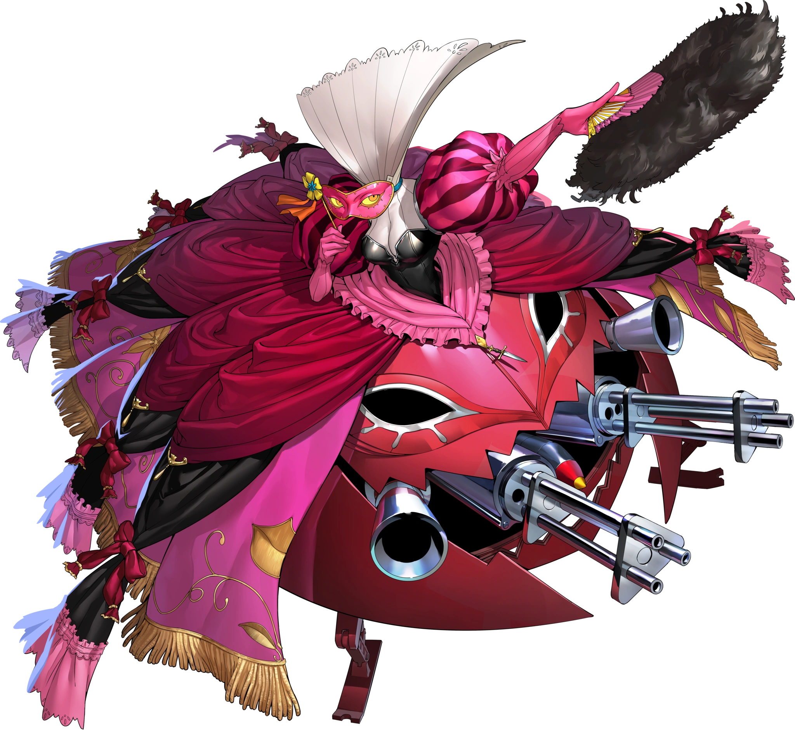
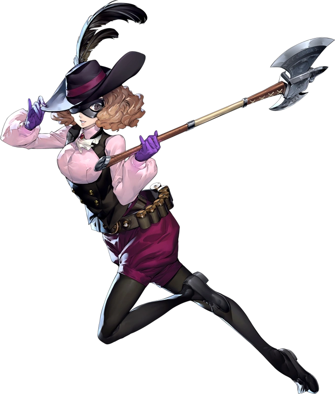

Introduction
Haru Okumura is the eighth unlockable character in Persona 5 Royal. She is the daughter of the Phantom Thieves’ fifth target.
The first Phantom Theif Haru met was Morgana as she encountered him on the street and then ended up in her father’s palace in
the metaverse.
Persona Unlocking
Haru unlocks her persona when she first enters her father’s palace with Morgana. However, since Haru is scared of the arranged marriage her father had planned her persona isn’t fully manifested. When Haru returns to her father’s palace with the phantom thieves she encounters her fiancé and learns he is no longer interested in her. Haru being betray unleashes her fully developed persona Milady.
Gallery
Milady
Noir(apperence in metaverse)
Haru Okumura
Facts about Haru Okumura
- Code Name: Noir
- DOB(date of birth): December 5, 1999
- Age: 17
- Height: 158 cm (5'2")
- Primary Tool: Axes
- Secondary Tool: Grenade launchers
- Arcana(personality): Empress
- Persona(asssistant): Milady